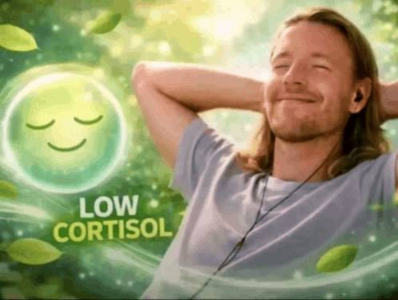

Esse é um ótimo método de respiração para cultivar um estado de calma e relaxamento de forma rápida.
Consiste em duas inspirações seguidas e uma expiração longa.

Inspire 5s, segure 2s, inspire mais 2s, segure 2s e solte devagar 9s.

5 minutos por dia durante um mês melhoraram o humor e reduziram a ansiedade (Balban et al., 2023).